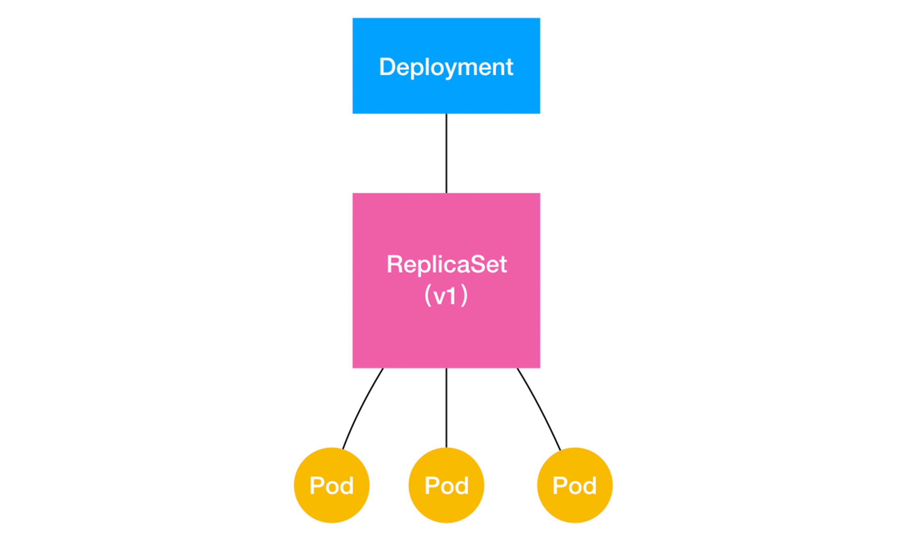
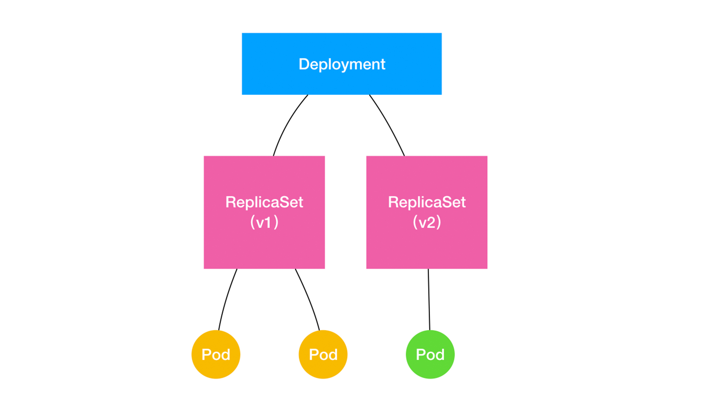

- 00 开篇词 打通“容器技术”的任督二脉.md.html
- 01 预习篇 · 小鲸鱼大事记（一）：初出茅庐.md.html
- 02 预习篇 · 小鲸鱼大事记（二）：崭露头角.md.html
- 03 预习篇 · 小鲸鱼大事记（三）：群雄并起.md.html
- 04 预习篇 · 小鲸鱼大事记（四）：尘埃落定.md.html
- 05 白话容器基础（一）：从进程说开去.md.html
- 06 白话容器基础（二）：隔离与限制.md.html
- 07 白话容器基础（三）：深入理解容器镜像.md.html
- 08 白话容器基础（四）：重新认识Docker容器.md.html
- 09 从容器到容器云：谈谈Kubernetes的本质.md.html
- 10 Kubernetes一键部署利器：kubeadm.md.html
- 11 从0到1：搭建一个完整的Kubernetes集群.md.html
- 12 牛刀小试：我的第一个容器化应用.md.html
- 13 为什么我们需要Pod？.md.html
- 14 深入解析Pod对象（一）：基本概念.md.html
- 15 深入解析Pod对象（二）：使用进阶.md.html
- 16 编排其实很简单：谈谈“控制器”模型.md.html
- 17 经典PaaS的记忆：作业副本与水平扩展.md.html
- 18 深入理解StatefulSet（一）：拓扑状态.md.html
- 19 深入理解StatefulSet（二）：存储状态.md.html
- 20 深入理解StatefulSet（三）：有状态应用实践.md.html
- 21 容器化守护进程的意义：DaemonSet.md.html
- 22 撬动离线业务：Job与CronJob.md.html
- 23 声明式API与Kubernetes编程范式.md.html
- 24 深入解析声明式API（一）：API对象的奥秘.md.html
- 25 深入解析声明式API（二）：编写自定义控制器.md.html
- 26 基于角色的权限控制：RBAC.md.html
- 27 聪明的微创新：Operator工作原理解读.md.html
- 28 PV、PVC、StorageClass，这些到底在说啥？.md.html
- 29 PV、PVC体系是不是多此一举？从本地持久化卷谈起.md.html
- 30 编写自己的存储插件：FlexVolume与CSI.md.html
- 31 容器存储实践：CSI插件编写指南.md.html
- 32 浅谈容器网络.md.html
- 33 深入解析容器跨主机网络.md.html
- 34 Kubernetes网络模型与CNI网络插件.md.html
- 35 解读Kubernetes三层网络方案.md.html
- 36 为什么说Kubernetes只有soft multi-tenancy？.md.html
- 37 找到容器不容易：Service、DNS与服务发现.md.html
- 38 从外界连通Service与Service调试“三板斧”.md.html
- 39 谈谈Service与Ingress.md.html
- 40 Kubernetes的资源模型与资源管理.md.html
- 41 十字路口上的Kubernetes默认调度器.md.html
- 42 Kubernetes默认调度器调度策略解析.md.html
- 43 Kubernetes默认调度器的优先级与抢占机制.md.html
- 44 Kubernetes GPU管理与Device Plugin机制.md.html
- 45 幕后英雄：SIG-Node与CRI.md.html
- 46 解读 CRI 与 容器运行时.md.html
- 47 绝不仅仅是安全：Kata Containers 与 gVisor.md.html
- 48 Prometheus、Metrics Server与Kubernetes监控体系.md.html
- 49 Custom Metrics_ 让Auto Scaling不再“食之无味”.md.html
- 50 让日志无处可逃：容器日志收集与管理.md.html
- 51 谈谈Kubernetes开源社区和未来走向.md.html
- 52 答疑：在问题中解决问题，在思考中产生思考.md.html
- 特别放送 2019 年，容器技术生态会发生些什么？.md.html
- 特别放送 基于 Kubernetes 的云原生应用管理，到底应该怎么做？.md.html
- 结束语 Kubernetes：赢开发者赢天下.md.html
- 捐赠
17 经典PaaS的记忆：作业副本与水平扩展
你好，我是张磊。今天我和你分享的主题是：经典PaaS的记忆之作业副本与水平扩展。
在上一篇文章中，我为你详细介绍了Kubernetes项目中第一个重要的设计思想：控制器模式。
而在今天这篇文章中，我就来为你详细讲解一下，Kubernetes里第一个控制器模式的完整实现：Deployment。
Deployment看似简单，但实际上，它实现了Kubernetes项目中一个非常重要的功能：Pod的“水平扩展/收缩”（horizontal scaling out/in）。这个功能，是从PaaS时代开始，一个平台级项目就必须具备的编排能力。
举个例子，如果你更新了Deployment的Pod模板（比如，修改了容器的镜像），那么Deployment就需要遵循一种叫作“滚动更新”（rolling update）的方式，来升级现有的容器。
而这个能力的实现，依赖的是Kubernetes项目中的一个非常重要的概念（API对象）：ReplicaSet。
ReplicaSet的结构非常简单，我们可以通过这个YAML文件查看一下：
apiVersion: apps/v1
kind: ReplicaSet
metadata:
name: nginx-set
labels:
app: nginx
spec:
replicas: 3
selector:
matchLabels:
app: nginx
template:
metadata:
labels:
app: nginx
spec:
containers:
- name: nginx
image: nginx:1.7.9
从这个YAML文件中，我们可以看到，一个ReplicaSet对象，其实就是由副本数目的定义和一个Pod模板组成的。不难发现，它的定义其实是Deployment的一个子集。
更重要的是，Deployment控制器实际操纵的，正是这样的ReplicaSet对象，而不是Pod对象。
还记不记得我在上一篇文章《编排其实很简单：谈谈“控制器”模型》中曾经提出过这样一个问题：对于一个Deployment所管理的Pod，它的ownerReference是谁？
所以，这个问题的答案就是：ReplicaSet。
明白了这个原理，我再来和你一起分析一个如下所示的Deployment：
apiVersion: apps/v1
kind: Deployment
metadata:
name: nginx-deployment
labels:
app: nginx
spec:
replicas: 3
selector:
matchLabels:
app: nginx
template:
metadata:
labels:
app: nginx
spec:
containers:
- name: nginx
image: nginx:1.7.9
ports:
- containerPort: 80
可以看到，这就是一个我们常用的nginx-deployment，它定义的Pod副本个数是3（spec.replicas=3）。
那么，在具体的实现上，这个Deployment，与ReplicaSet，以及Pod的关系是怎样的呢？
我们可以用一张图把它描述出来：

通过这张图，我们就很清楚地看到，一个定义了replicas=3的Deployment，与它的ReplicaSet，以及Pod的关系，实际上是一种“层层控制”的关系。
其中，ReplicaSet负责通过“控制器模式”，保证系统中Pod的个数永远等于指定的个数（比如，3个）。这也正是Deployment只允许容器的restartPolicy=Always的主要原因：只有在容器能保证自己始终是Running状态的前提下，ReplicaSet调整Pod的个数才有意义。
而在此基础上，Deployment同样通过“控制器模式”，来操作ReplicaSet的个数和属性，进而实现“水平扩展/收缩”和“滚动更新”这两个编排动作。
其中，“水平扩展/收缩”非常容易实现，Deployment Controller只需要修改它所控制的ReplicaSet的Pod副本个数就可以了。
比如，把这个值从3改成4，那么Deployment所对应的ReplicaSet，就会根据修改后的值自动创建一个新的Pod。这就是“水平扩展”了；“水平收缩”则反之。
而用户想要执行这个操作的指令也非常简单，就是kubectl scale，比如：
$ kubectl scale deployment nginx-deployment --replicas=4
deployment.apps/nginx-deployment scaled
那么，“滚动更新”又是什么意思，是如何实现的呢？
接下来，我还以这个Deployment为例，来为你讲解“滚动更新”的过程。
首先，我们来创建这个nginx-deployment：
$ kubectl create -f nginx-deployment.yaml --record
注意，在这里，我额外加了一个–record参数。它的作用，是记录下你每次操作所执行的命令，以方便后面查看。
然后，我们来检查一下nginx-deployment创建后的状态信息：
$ kubectl get deployments
NAME DESIRED CURRENT UP-TO-DATE AVAILABLE AGE
nginx-deployment 3 0 0 0 1s
在返回结果中，我们可以看到四个状态字段，它们的含义如下所示。
DESIRED：用户期望的Pod副本个数（spec.replicas的值）；
CURRENT：当前处于Running状态的Pod的个数；
UP-TO-DATE：当前处于最新版本的Pod的个数，所谓最新版本指的是Pod的Spec部分与Deployment里Pod模板里定义的完全一致；
AVAILABLE：当前已经可用的Pod的个数，即：既是Running状态，又是最新版本，并且已经处于Ready（健康检查正确）状态的Pod的个数。
可以看到，只有这个AVAILABLE字段，描述的才是用户所期望的最终状态。
而Kubernetes项目还为我们提供了一条指令，让我们可以实时查看Deployment对象的状态变化。这个指令就是kubectl rollout status：
$ kubectl rollout status deployment/nginx-deployment
Waiting for rollout to finish: 2 out of 3 new replicas have been updated...
deployment.apps/nginx-deployment successfully rolled out
在这个返回结果中，“2 out of 3 new replicas have been updated”意味着已经有2个Pod进入了UP-TO-DATE状态。
继续等待一会儿，我们就能看到这个Deployment的3个Pod，就进入到了AVAILABLE状态：
NAME DESIRED CURRENT UP-TO-DATE AVAILABLE AGE
nginx-deployment 3 3 3 3 20s
此时，你可以尝试查看一下这个Deployment所控制的ReplicaSet：
$ kubectl get rs
NAME DESIRED CURRENT READY AGE
nginx-deployment-3167673210 3 3 3 20s
如上所示，在用户提交了一个Deployment对象后，Deployment Controller就会立即创建一个Pod副本个数为3的ReplicaSet。这个ReplicaSet的名字，则是由Deployment的名字和一个随机字符串共同组成。
这个随机字符串叫作pod-template-hash，在我们这个例子里就是：3167673210。ReplicaSet会把这个随机字符串加在它所控制的所有Pod的标签里，从而保证这些Pod不会与集群里的其他Pod混淆。
而ReplicaSet的DESIRED、CURRENT和READY字段的含义，和Deployment中是一致的。所以，相比之下，Deployment只是在ReplicaSet的基础上，添加了UP-TO-DATE这个跟版本有关的状态字段。
这个时候，如果我们修改了Deployment的Pod模板，“滚动更新”就会被自动触发。
修改Deployment有很多方法。比如，我可以直接使用kubectl edit指令编辑Etcd里的API对象。
$ kubectl edit deployment/nginx-deployment
...
spec:
containers:
- name: nginx
image: nginx:1.9.1 # 1.7.9 -> 1.9.1
ports:
- containerPort: 80
...
deployment.extensions/nginx-deployment edited
这个kubectl edit指令，会帮你直接打开nginx-deployment的API对象。然后，你就可以修改这里的Pod模板部分了。比如，在这里，我将nginx镜像的版本升级到了1.9.1。
备注：kubectl edit并不神秘，它不过是把API对象的内容下载到了本地文件，让你修改完成后再提交上去。
kubectl edit指令编辑完成后，保存退出，Kubernetes就会立刻触发“滚动更新”的过程。你还可以通过kubectl rollout status指令查看nginx-deployment的状态变化：
$ kubectl rollout status deployment/nginx-deployment
Waiting for rollout to finish: 2 out of 3 new replicas have been updated...
deployment.extensions/nginx-deployment successfully rolled out
这时，你可以通过查看Deployment的Events，看到这个“滚动更新”的流程：
$ kubectl describe deployment nginx-deployment
...
Events:
Type Reason Age From Message
---- ------ ---- ---- -------
...
Normal ScalingReplicaSet 24s deployment-controller Scaled up replica set nginx-deployment-1764197365 to 1
Normal ScalingReplicaSet 22s deployment-controller Scaled down replica set nginx-deployment-3167673210 to 2
Normal ScalingReplicaSet 22s deployment-controller Scaled up replica set nginx-deployment-1764197365 to 2
Normal ScalingReplicaSet 19s deployment-controller Scaled down replica set nginx-deployment-3167673210 to 1
Normal ScalingReplicaSet 19s deployment-controller Scaled up replica set nginx-deployment-1764197365 to 3
Normal ScalingReplicaSet 14s deployment-controller Scaled down replica set nginx-deployment-3167673210 to 0
可以看到，首先，当你修改了Deployment里的Pod定义之后，Deployment Controller会使用这个修改后的Pod模板，创建一个新的ReplicaSet（hash=1764197365），这个新的ReplicaSet的初始Pod副本数是：0。
然后，在Age=24 s的位置，Deployment Controller开始将这个新的ReplicaSet所控制的Pod副本数从0个变成1个，即：“水平扩展”出一个副本。
紧接着，在Age=22 s的位置，Deployment Controller又将旧的ReplicaSet（hash=3167673210）所控制的旧Pod副本数减少一个，即：“水平收缩”成两个副本。
如此交替进行，新ReplicaSet管理的Pod副本数，从0个变成1个，再变成2个，最后变成3个。而旧的ReplicaSet管理的Pod副本数则从3个变成2个，再变成1个，最后变成0个。这样，就完成了这一组Pod的版本升级过程。
像这样，将一个集群中正在运行的多个Pod版本，交替地逐一升级的过程，就是“滚动更新”。
在这个“滚动更新”过程完成之后，你可以查看一下新、旧两个ReplicaSet的最终状态：
$ kubectl get rs
NAME DESIRED CURRENT READY AGE
nginx-deployment-1764197365 3 3 3 6s
nginx-deployment-3167673210 0 0 0 30s
其中，旧ReplicaSet（hash=3167673210）已经被“水平收缩”成了0个副本。
这种“滚动更新”的好处是显而易见的。
比如，在升级刚开始的时候，集群里只有1个新版本的Pod。如果这时，新版本Pod有问题启动不起来，那么“滚动更新”就会停止，从而允许开发和运维人员介入。而在这个过程中，由于应用本身还有两个旧版本的Pod在线，所以服务并不会受到太大的影响。
当然，这也就要求你一定要使用Pod的Health Check机制检查应用的运行状态，而不是简单地依赖于容器的Running状态。要不然的话，虽然容器已经变成Running了，但服务很有可能尚未启动，“滚动更新”的效果也就达不到了。
而为了进一步保证服务的连续性，Deployment Controller还会确保，在任何时间窗口内，只有指定比例的Pod处于离线状态。同时，它也会确保，在任何时间窗口内，只有指定比例的新Pod被创建出来。这两个比例的值都是可以配置的，默认都是DESIRED值的25%。
所以，在上面这个Deployment的例子中，它有3个Pod副本，那么控制器在“滚动更新”的过程中永远都会确保至少有2个Pod处于可用状态，至多只有4个Pod同时存在于集群中。这个策略，是Deployment对象的一个字段，名叫RollingUpdateStrategy，如下所示：
apiVersion: apps/v1
kind: Deployment
metadata:
name: nginx-deployment
labels:
app: nginx
spec:
...
strategy:
type: RollingUpdate
rollingUpdate:
maxSurge: 1
maxUnavailable: 1
在上面这个RollingUpdateStrategy的配置中，maxSurge指定的是除了DESIRED数量之外，在一次“滚动”中，Deployment控制器还可以创建多少个新Pod；而maxUnavailable指的是，在一次“滚动”中，Deployment控制器可以删除多少个旧Pod。
同时，这两个配置还可以用前面我们介绍的百分比形式来表示，比如：maxUnavailable=50%，指的是我们最多可以一次删除“50%*DESIRED数量”个Pod。
结合以上讲述，现在我们可以扩展一下Deployment、ReplicaSet和Pod的关系图了。

如上所示，Deployment的控制器，实际上控制的是ReplicaSet的数目，以及每个ReplicaSet的属性。
而一个应用的版本，对应的正是一个ReplicaSet；这个版本应用的Pod数量，则由ReplicaSet通过它自己的控制器（ReplicaSet Controller）来保证。
通过这样的多个ReplicaSet对象，Kubernetes项目就实现了对多个“应用版本”的描述。
而明白了“应用版本和ReplicaSet一一对应”的设计思想之后，我就可以为你讲解一下Deployment对应用进行版本控制的具体原理了。
这一次，我会使用一个叫kubectl set image的指令，直接修改nginx-deployment所使用的镜像。这个命令的好处就是，你可以不用像kubectl edit那样需要打开编辑器。
不过这一次，我把这个镜像名字修改成为了一个错误的名字，比如：nginx:1.91。这样，这个Deployment就会出现一个升级失败的版本。
我们一起来实践一下：
$ kubectl set image deployment/nginx-deployment nginx=nginx:1.91
deployment.extensions/nginx-deployment image updated
由于这个nginx:1.91镜像在Docker Hub中并不存在，所以这个Deployment的“滚动更新”被触发后，会立刻报错并停止。
这时，我们来检查一下ReplicaSet的状态，如下所示：
$ kubectl get rs
NAME DESIRED CURRENT READY AGE
nginx-deployment-1764197365 2 2 2 24s
nginx-deployment-3167673210 0 0 0 35s
nginx-deployment-2156724341 2 2 0 7s
通过这个返回结果，我们可以看到，新版本的ReplicaSet（hash=2156724341）的“水平扩展”已经停止。而且此时，它已经创建了两个Pod，但是它们都没有进入READY状态。这当然是因为这两个Pod都拉取不到有效的镜像。
与此同时，旧版本的ReplicaSet（hash=1764197365）的“水平收缩”，也自动停止了。此时，已经有一个旧Pod被删除，还剩下两个旧Pod。
那么问题来了， 我们如何让这个Deployment的3个Pod，都回滚到以前的旧版本呢？
我们只需要执行一条kubectl rollout undo命令，就能把整个Deployment回滚到上一个版本：
$ kubectl rollout undo deployment/nginx-deployment
deployment.extensions/nginx-deployment
很容易想到，在具体操作上，Deployment的控制器，其实就是让这个旧ReplicaSet（hash=1764197365）再次“扩展”成3个Pod，而让新的ReplicaSet（hash=2156724341）重新“收缩”到0个Pod。
更进一步地，如果我想回滚到更早之前的版本，要怎么办呢？
首先，我需要使用kubectl rollout history命令，查看每次Deployment变更对应的版本。而由于我们在创建这个Deployment的时候，指定了–record参数，所以我们创建这些版本时执行的kubectl命令，都会被记录下来。这个操作的输出如下所示：
$ kubectl rollout history deployment/nginx-deployment
deployments "nginx-deployment"
REVISION CHANGE-CAUSE
1 kubectl create -f nginx-deployment.yaml --record
2 kubectl edit deployment/nginx-deployment
3 kubectl set image deployment/nginx-deployment nginx=nginx:1.91
可以看到，我们前面执行的创建和更新操作，分别对应了版本1和版本2，而那次失败的更新操作，则对应的是版本3。
当然，你还可以通过这个kubectl rollout history指令，看到每个版本对应的Deployment的API对象的细节，具体命令如下所示：
$ kubectl rollout history deployment/nginx-deployment --revision=2
然后，我们就可以在kubectl rollout undo命令行最后，加上要回滚到的指定版本的版本号，就可以回滚到指定版本了。这个指令的用法如下：
$ kubectl rollout undo deployment/nginx-deployment --to-revision=2
deployment.extensions/nginx-deployment
这样，Deployment Controller还会按照“滚动更新”的方式，完成对Deployment的降级操作。
不过，你可能已经想到了一个问题：我们对Deployment进行的每一次更新操作，都会生成一个新的ReplicaSet对象，是不是有些多余，甚至浪费资源呢？
没错。
所以，Kubernetes项目还提供了一个指令，使得我们对Deployment的多次更新操作，最后 只生成一个ReplicaSet。
具体的做法是，在更新Deployment前，你要先执行一条kubectl rollout pause指令。它的用法如下所示：
$ kubectl rollout pause deployment/nginx-deployment
deployment.extensions/nginx-deployment paused
这个kubectl rollout pause的作用，是让这个Deployment进入了一个“暂停”状态。
所以接下来，你就可以随意使用kubectl edit或者kubectl set image指令，修改这个Deployment的内容了。
由于此时Deployment正处于“暂停”状态，所以我们对Deployment的所有修改，都不会触发新的“滚动更新”，也不会创建新的ReplicaSet。
而等到我们对Deployment修改操作都完成之后，只需要再执行一条kubectl rollout resume指令，就可以把这个Deployment“恢复”回来，如下所示：
$ kubectl rollout resume deployment/nginx-deployment
deployment.extensions/nginx-deployment resumed
而在这个kubectl rollout resume指令执行之前，在kubectl rollout pause指令之后的这段时间里，我们对Deployment进行的所有修改，最后只会触发一次“滚动更新”。
当然，我们可以通过检查ReplicaSet状态的变化，来验证一下kubectl rollout pause和kubectl rollout resume指令的执行效果，如下所示：
$ kubectl get rs
NAME DESIRED CURRENT READY AGE
nginx-1764197365 0 0 0 2m
nginx-3196763511 3 3 3 28s
通过返回结果，我们可以看到，只有一个hash=3196763511的ReplicaSet被创建了出来。
不过，即使你像上面这样小心翼翼地控制了ReplicaSet的生成数量，随着应用版本的不断增加，Kubernetes中还是会为同一个Deployment保存很多很多不同的ReplicaSet。
那么，我们又该如何控制这些“历史”ReplicaSet的数量呢？
很简单，Deployment对象有一个字段，叫作spec.revisionHistoryLimit，就是Kubernetes为Deployment保留的“历史版本”个数。所以，如果把它设置为0，你就再也不能做回滚操作了。
总结
在今天这篇文章中，我为你详细讲解了Deployment这个Kubernetes项目中最基本的编排控制器的实现原理和使用方法。
通过这些讲解，你应该了解到：Deployment实际上是一个两层控制器。首先，它通过ReplicaSet的个数来描述应用的版本；然后，它再通过ReplicaSet的属性（比如replicas的值），来保证Pod的副本数量。
备注：Deployment控制ReplicaSet（版本），ReplicaSet控制Pod（副本数）。这个两层控制关系一定要牢记。
不过，相信你也能够感受到，Kubernetes项目对Deployment的设计，实际上是代替我们完成了对“应用”的抽象，使得我们可以使用这个Deployment对象来描述应用，使用kubectl rollout命令控制应用的版本。
可是，在实际使用场景中，应用发布的流程往往千差万别，也可能有很多的定制化需求。比如，我的应用可能有会话黏连（session sticky），这就意味着“滚动更新”的时候，哪个Pod能下线，是不能随便选择的。
这种场景，光靠Deployment自己就很难应对了。对于这种需求，我在专栏后续文章中重点介绍的“自定义控制器”，就可以帮我们实现一个功能更加强大的Deployment Controller。
当然，Kubernetes项目本身，也提供了另外一种抽象方式，帮我们应对其他一些用Deployment无法处理的应用编排场景。这个设计，就是对有状态应用的管理，也是我在下一篇文章中要重点讲解的内容。
思考题
你听说过金丝雀发布（Canary Deployment）和蓝绿发布（Blue-Green Deployment）吗？你能说出它们是什么意思吗？
实际上，有了Deployment的能力之后，你可以非常轻松地用它来实现金丝雀发布、蓝绿发布，以及A/B测试等很多应用发布模式。这些问题的答案都在这个GitHub库，建议你在课后实践一下。
感谢你的收听，欢迎你给我留言，也欢迎分享给更多的朋友一起阅读。
© 2019 - 2023 Liangliang Lee. Powered by gin and hexo-theme-book.